Estimate a home price
Test how floor area, rooms, and age change a transparent baseline estimate.
Loading…practical examples
Each example has a clear job. They are not intended to hide the hard parts; they are intended to give you a solid first step.
interactive Flow/WASM lab
Move the controls. The calculations run locally in the same Flow-built WebAssembly module as the digit demo. The numbers are illustrative, but the workflows are the ones teams actually need to reason about.
Test how floor area, rooms, and age change a transparent baseline estimate.
Loading…Combine utilisation, missed payments, and debt ratio into a review queue.
Loading…See why a model should not compare raw salary and age as if their units mean the same thing.
Loading…Use a z-score as a simple first alert before digging into a possible equipment fault.
Loading…Drag the dot. The Flow kernel calculates distance to three fixed customer segments: occasional, regular, and high-value.
Occasional Regular High-value
Loading…Horizontal: visits per month. Vertical: average order value.01 / classification
Train a small classifier from four flower measurements. This is a good first example for fitting a model, checking probabilities, and choosing a threshold.
let model = knn_classifier_fit(X_train, y_train, 5)
let probabilities = knn_classifier_predict(model, X_test)
let labels = knn_classifier_decide(model, X_test, 0.65)02 / preprocessing
Standardise continuous columns, keep categorical data separate, then pass the result to a model. This is the usual place where pipelines become valuable.
let scaler = standard_scaler_fit(X_train)
let X_ready = standard_scaler_transform(scaler, X_train)
let model = logistic_regression_fit(X_ready, y_train)03 / validation
Use cross-validation to compare parameter values. The progress effect can report what is happening without coupling search code to one display format.
let folds = stratified_kfold(5, true, 42)
let score = cross_validate_score(model, X, y, folds)
println(score)04 / browser wasm
Draw one digit in the box. The demo rescales it to 28×28 pixels, compares it with ten centroids trained from all 60,000 MNIST training images, and returns the closest class.
Loading the MNIST centroids and the Flow WebAssembly distance kernel…
The learned centroids stay in your browser. Flow source → C backend → Emscripten → WebAssembly calculates the ten distance scores.
20 problems, 20 visual walkthroughs
These are intentionally concrete: each GIF names the decision someone needs to make, then shows the shape of the solution. They are small teaching examples, not claims about production accuracy.
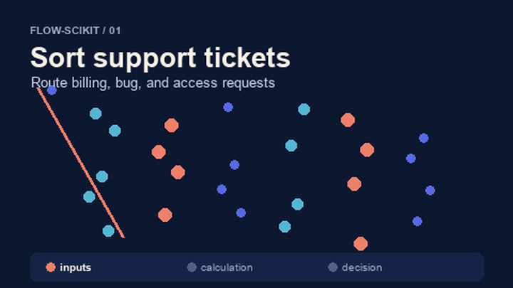
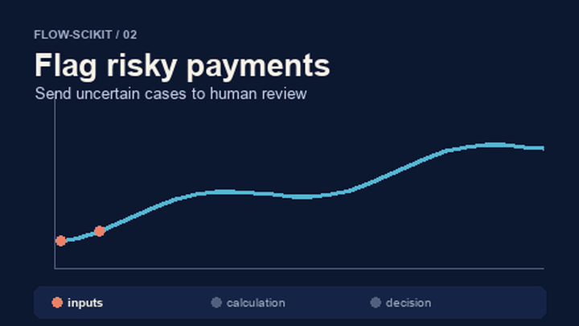
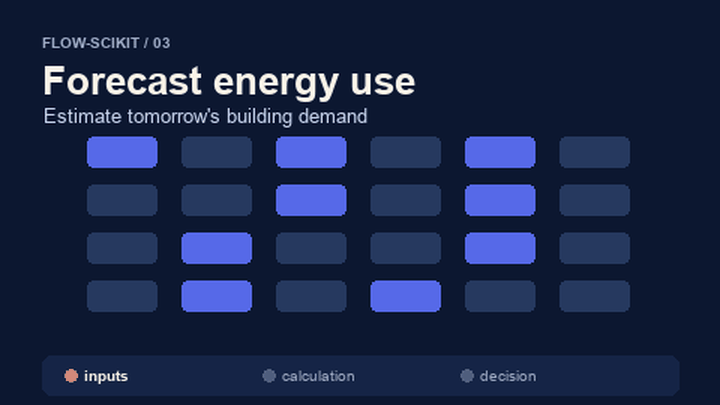
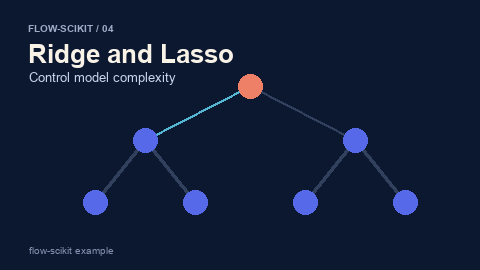
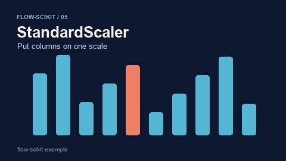
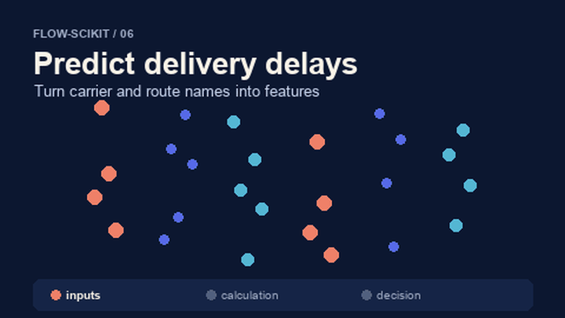
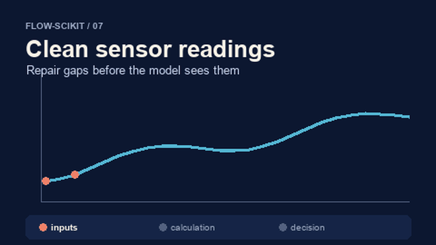
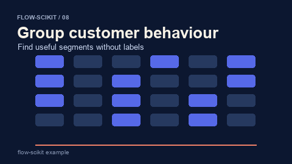
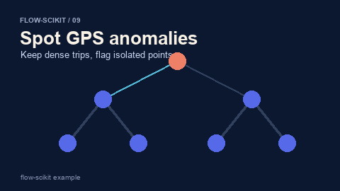
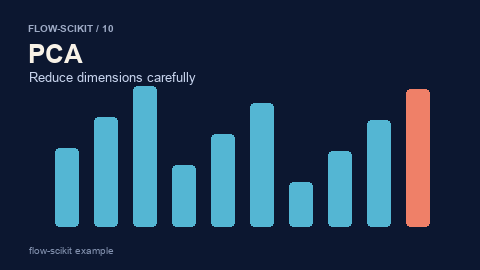
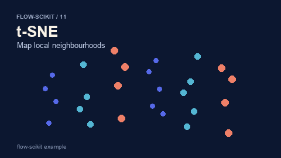
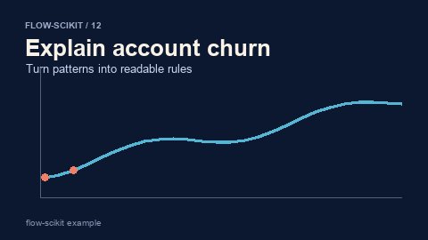
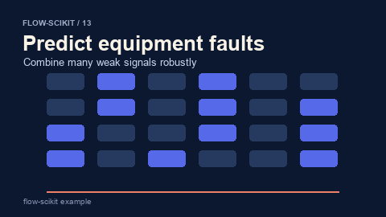
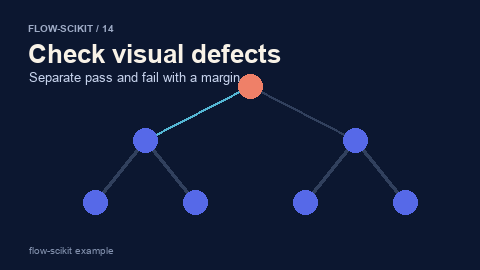
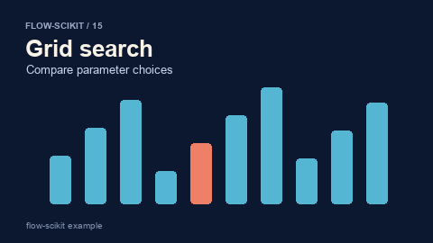
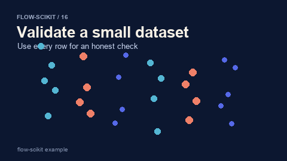
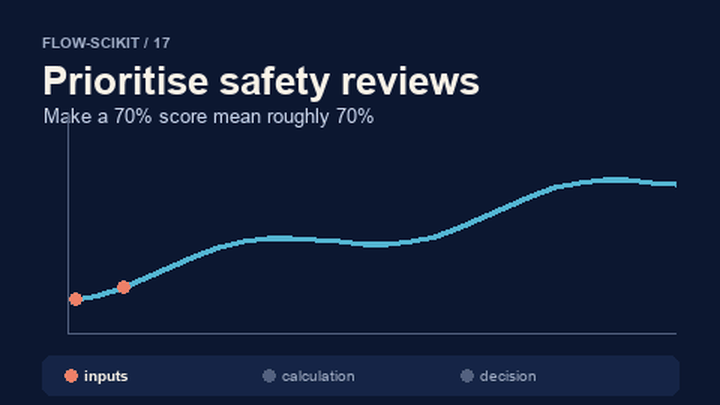
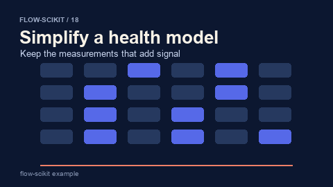
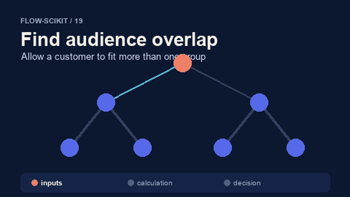
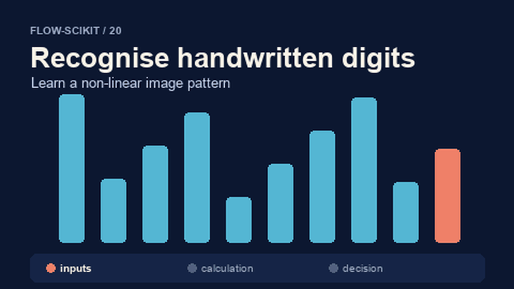
more examples in the repository